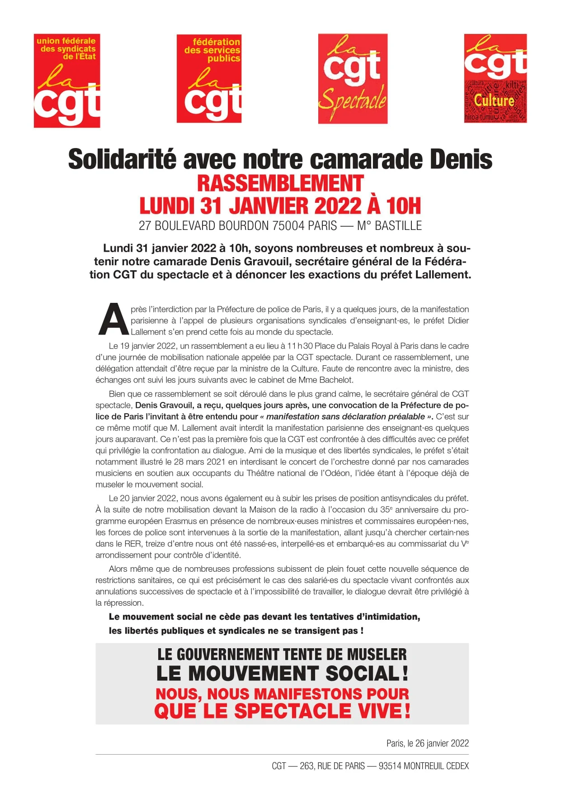

Publication d’archives
Pour que le spectacle vive !
Date indiquée par Facebook · 27 janvier 2022
Texte conservé avec la publication
Contexte du dossier
Le 31 mai, le PCF 79 rapporte le départ des occupants et la naissance du « Moulin des Résistances ». Il conteste la lecture municipale d’une occupation devenue paradoxale après la réouverture : le mouvement portait d’abord, selon ses acteurs, des droits sociaux demeurés sans réponse. Le texte rappelle le repli dans l’ancien bar pour ne pas empêcher les spectacles et maintient le soutien fédéral. En janvier 2022, un nouveau message affirme « Pour que le spectacle vive » et critique une intervention préfectorale contre ce secteur, sans la détailler. Le retour du public ne suffit pas à garantir des vies professionnelles dignes.

Sources
Archive rouge · export Facebook · AR-0002-FB-01980
À lire aussi · #Qatar2022 « Je comprends ces mouvements de boycott. Mais c’est trop tard, il fallait se révolter il y a 12…